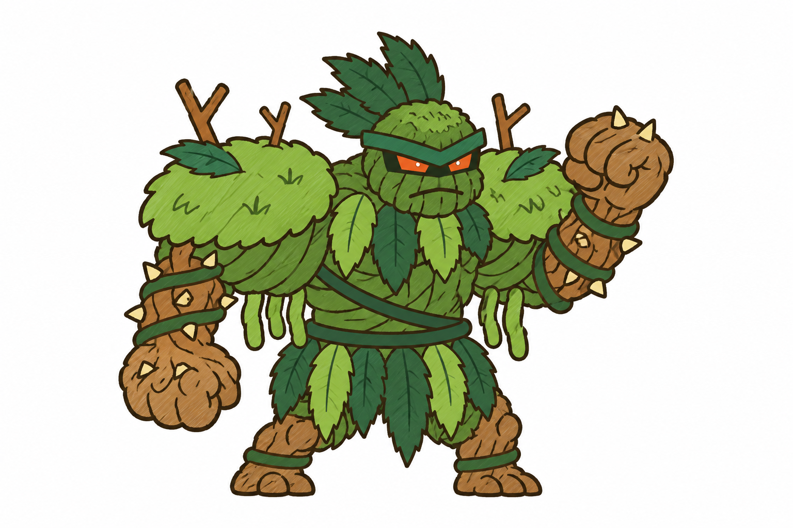
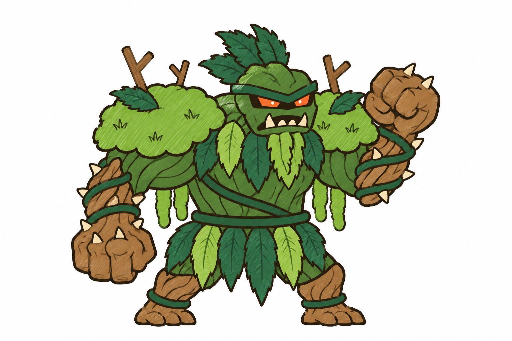

Tướng thứ 7 đảo Mộc: người cây, concept bản 2 (chiến hơn, gần kiểu quái đầm lầy hơn)
Cùng một thiết kế thân, hai kiểu đầu. Chọn một kiểu hoặc dặn sửa; chưa tách lớp, chưa rig.

C · Mím miệng
Gờ mày nặng, hốc mắt tối, mắt cam, hàm rễ bạnh mím chặt, mào lá răng cưa.

D · Nhe nanh
Như C nhưng há miệng gầm lộ hàm răng gỗ và hai nanh dưới, có chòm râu rêu rủ dưới cằm.
Bản 1 (đã bị trả), để so
 A · Người rêu đầm lầy
A · Người rêu đầm lầy
 B · Người rễ mặt gỗ
B · Người rễ mặt gỗ